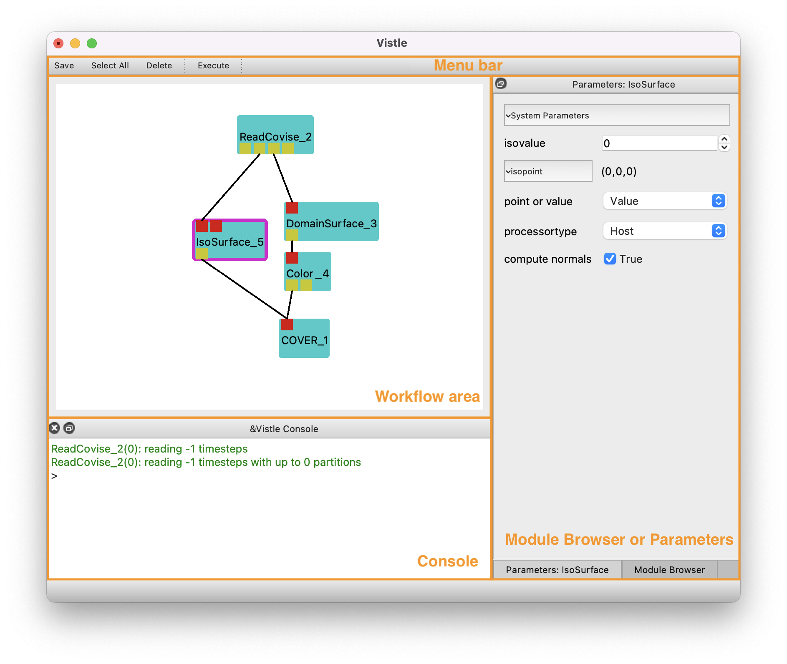

GUI
The Vistle GUI provides an intuitive way to assemble, configure and execute workflows. It is composed of four main areas: The workflow area; a module browser and parameters area; a console and a menu bar.

Workflow Area
The workflow area shows the assembled module net. Vistle modules encapsulate processing steps and are rendered as a blue icon in the workflow area. They can have several input (red squares) and/or output ports (yellow squares). Hovering over a port shows information e.g. to check if two ports are compatible. Connections between two modules are indicated by lines linking two ports of different modules. A link can be deleted by double-clicking on it. Invalid links are drawn in grey. Right-click on a module shows additional options to execute, delete or restart a module. Frames around a module indicate its state: selected (pink), running (green), unavailable (grey). Double-clicking a module executes it and all subsequent ones.
Module Browser and Parameters
The Module Browser contains a list of all available modules in alphabetical order. Modules can be searched for by use of the text field above the list. They can be added to the workflow using drag-and-drop.
Modules in the workflow can be configured using the Module Parameter area. This will show up by selecting the module in the workflow area or by clicking on the respective button below the Module Browser. Module Parameters contain general settings depending on the type of module (e.g. reader specific) as well as module dependent settings.
Vistle Console
The Vistle console prints messages from modules and other information. Besides, it can be used to enter Python commands such as to spawn or link modules.